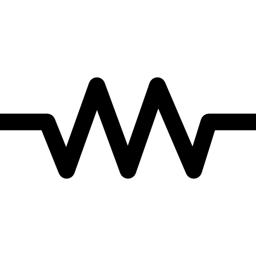

🖉 Lectura e interpretación de esquemas electrónicos
🧠TeorÃa básica
Los esquemas electrónicos son diagramas que representan gráficamente un circuito, mostrando sus componentes y cómo están conectados entre sà mediante lÃneas que representan conductores eléctricos.
Estos diagramas permiten:
Comprender el funcionamiento del circuito.
Construir o reparar circuitos reales.
Comunicar diseños entre técnicos, estudiantes e ingenieros.
- 🔠SÃmbolos comunes
-
Algunos sÃmbolos estandarizados que encontrarás:
Componente SÃmbolo básico Resistencia  Condensador Diodo LED Transistor BJT Interruptor Fuente de voltaje - 🧠MetodologÃa para interpretar esquemas
-
1. Identifica la fuente de alimentación
¿Dónde está la entrada de voltaje? (Ej. baterÃa, fuente de poder)
Verifica la polaridad: positivo y negativo (Vcc y GND).
2. Ubica los componentes principales
Localiza resistencias, LEDs, transistores, etc.
Anota sus valores (Ω, μF, etc.).
3. Sigue el flujo de corriente
Analiza desde la fuente hacia los componentes.
Observa cómo está conectada la carga (ej. LED con resistencia).
4. Distingue conexiones serie y paralelo
Serie: corriente pasa por un componente y luego por otro.
Paralelo: corriente se divide entre dos o más caminos.
5. Interpreta los puntos de control
Busca interruptores, botones o señales de entrada.
Analiza si hay controladores (como transistores o microcontroladores).
6. Verifica continuidad y lógica
Asegúrate de que todas las conexiones tengan sentido eléctrico.
Si es un circuito digital, observa compuertas lógicas y señales binarias.
Obra publicada con Licencia Creative Commons Reconocimiento Compartir igual 4.0